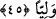

43. “Babacığım, bana sana gelmeyen bir bilgi geldi; bana uy, seni düzgün bir yola
ileteyim.”
“Babacığım, bana” vahiy yoluyla “sana gelmeyen bir bilgi geldi; bana uy” onu
benden öğrenmekten çekinme ki, “seni düzgün” doğru, en yüce mertebelere ulaştıran ve
sapıklıktan kurtaran “bir yola ileteyim.”
Burada Hz. İbrahim, her ne kadar babası cehâletin zirvesinde olsa da onu aşırı
câhillikle anmadı. Kendisi de engin bir bilgiye sahip olduğu hâlde kendisini üstün
ilimle vasfetmedi. Aksine kendini çok iyi bilinen bir hususta babasının arkadaşı gibi
gösterdi. Hz. İbrahim’in bu ifâdeleri yumuşaklık ve lütuf babından söylenmiş sözlerdir.
44. “Babacığım şeytana tapma; çünkü şeytan, Rahman’a isyan etmiştir.”
“Babacığım şeytana tapma” putlara tapman şeytana tapman demektir. Çünkü onlara
tapmayı sana süslü gösteren ve seni onlara yönlendiren şeytandır. “Çünkü şeytan,
Rahman’a isyan etmiştir.” Onun isyanlarından birisi de Hz. Âdem’e secde etmekten
yüz çevirmesidir. Malumdur ki âsîye itâat etmek, cezâyı gerektirir ve nimetin elden
gitmesine sebep olur. Rahman isminin söylenmesi, şeytanın isyanının ne kadar çirkin
olduğunu ortaya koymak içindir.
45. “Babacığım, ben sana Rahman’dan bir azabın dokunmasından korkuyorum. O
zaman, şeytanın dostu olursun.”
“Babacığım,” şeytana uymak ve Rahman’a isyan etmek gibi içinde bulunduğun
durumda iken ölecek olursan “ben sana Rahman’dan bir azabın dokunmasından
korkuyorum. O zaman, şeytanın dostu” yani ebedî lânette ona yakın veya birbirinizi
takip eden yakınlar “olursun.”
46. (Babası) dedi ki: “Ey İbrahim! Sen benim tanrılarımdan yüz mü çeviriyorsun?
Eğer vazgeçmezsen, andolsun seni taşlarım. Uzun süre benden ayrıl, git!”